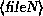
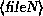

The tar command is most often used to archive files.
The format of the tar command is
tar 
 ...
...
where  is the list of commands and options for tar,
and
is the list of commands and options for tar,
and  through  is the list of files to
add or extract from the archive.
through  is the list of files to
add or extract from the archive.
For example, the command
# tar cvf backup.tar /etc
would pack all of the files in /etc into the tar archive backup.tar. The first argument to tar---``cvf''---is the tar ``command''. ``c'' tells tar to create a new archive file. The ``v'' option forces tar into verbose mode---printing each filename as it is archived. The ``f'' option tells tar that the next argument---backup.tar---is the name of the archive to create. The rest of the arguments to tar are the file and directory names to add to the archive.
The command
# tar xvf backup.tar
will extract the tar file backup.tar in the current directory. This can sometimes be dangerous---when extracting files from a tar file, old files are overwritten.
Furthermore, before extracting tar files it is important to know where the files should be unpacked. For example, let's say you archived the following files: /etc/hosts, /etc/group, and /etc/passwd. If you use the command
# tar cvf backup.tar /etc/hosts /etc/group /etc/passwd
the directory name /etc/ is added to the beginning of each filename. In order to extract the files to the correct location, you would need to use the following commands:
# cd /
# tar xvf backup.tar
because files are extracted with the pathname saved in the archive file.
If, however, you archived the files with the command
# cd /etc
# tar cvf hosts group passwd
the directory name is not saved in the archive file. Therefore, you would need to ``cd /etc'' before extracting the files. As you can see, how the tar file is created makes a large difference in where you extract it. The command
# tar tvf backup.tar
may be used to display an ``index'' of the tar file before unpacking it. In this way you can see what directory the filenames in the archive are stored relative to, and can extract the archive from the correct location.